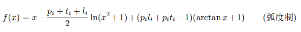
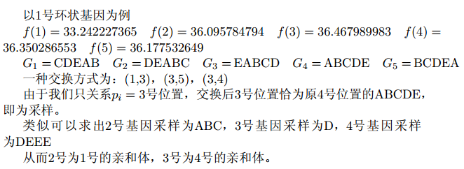

BZPRO
#4701. 采样
内存限制：512 MiB
时间限制：10 Sec
提交
提交记录
讨论
题目描述
【题目背景】
“看着我的眼睛。”一一优祖列罕
【题意描述】
VOID抽取的基因呈环形，每个单元用A到Z的大写字母表示，换句话说一个基因就是一个环状字符串。设环状基因长
度为Li，从其中Li个断点分别断开，可以形成Li种链状基因（不一定两两不同）。以ABCAB为例，链状基因分别为A
BCAB，BCABA，CABAB，ABABC，BABCA，依次编号1--5现要抽取其中一种链状基因，不同种类基因参数不尽相同，每
个环状基因有两个参数Pi,ti首先执行打乱操作，每个位置x设定权重

对于任意x，y，当F(x)<f（y）且编号X的链状基因字典序小于编号y的链状基因字典序时，这两个链状基因会交换
编号。输入数据保证存在一种方案使得该操作不会执行超过f次便会停止。（易知执行顺序不影响最终结果）最终
，选取编号Pi的链状基因作为该环状基因的采样，记为Gi。现在有N个环状基因。a环状基因是b环状基因的亲和体
，当且仅当a环状基因的采样为b环状基因采样的前缀。求每个环状基因的亲和体数量。
输入格式
第一行一个数n，表示环状基因的数量。
接下来n行，每行描述一个环状基因，由一个字符串，Pi，ti组成，之间用空格分隔。
1<=Pi<=Li,1<=Ti<=10000
输出格式
输出n行，每行一个数，表示该环状基因的亲和体数量。
样例
样例输入
4
CDEAB 3 2
ABC 2 4
D 1 6
EDEE 2 6
样例输出
1
0
0
1
数据范围与提示
